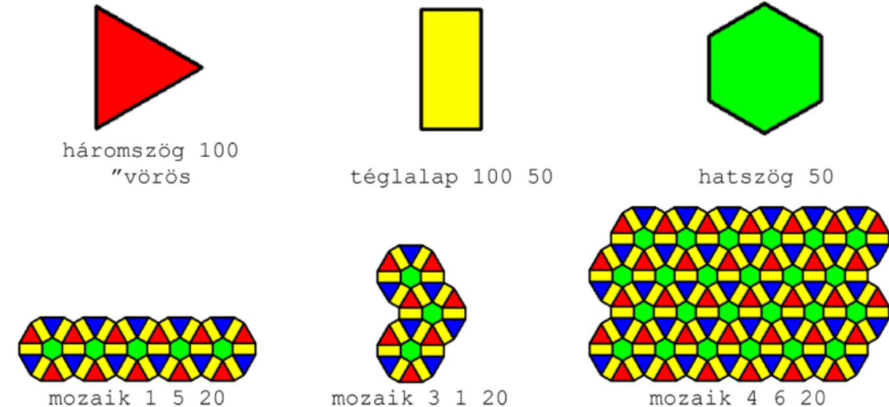
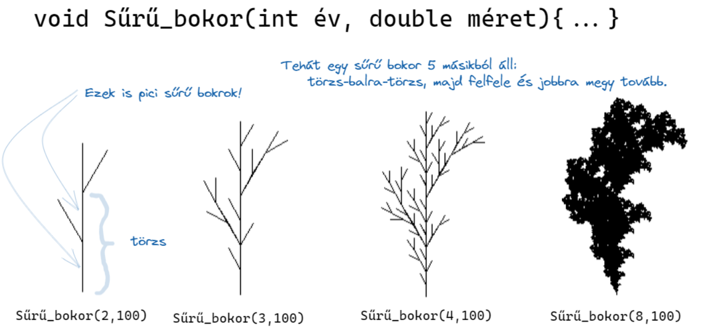
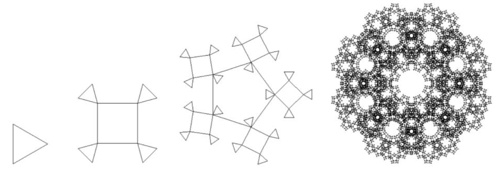

Én ezt a részt szerettem. Olyan chilles volt és nem volt nehéz. A végeredmény néha még szép is lett. Részemről sokat segített a mindebféle kódok irásában, és a programozás megszokásában.
K-logo
A logokareszek között ez volt az első féle. Ahogy a többinél itt is voltak nehezebb és könyebb feladatok. A végére vagy szép vagy nagyon érdekes alakzatok jöttek ki. Eleinte színte mindig tippeltem a fokokat mert lusta voltam számolgatni, de a végére valahogy rávettem magam. Amikor valami nem sikerült minidg valami, a mintától teljesen különböző alakzat jött létre. Mostmár szerintem vicces, de akkor nagyon ideges lehettem. Szerencsére amikor már megvolt az első alkazat (pl. itt az első korong) utána a könnyű volt azt ismételni.
Feladatok
Ez szerintem egy jó példa az ismétlődő logo mozaikos feladatokra. (Szerencsére nem volt nehéz.)
Itt az volt a feladat, hogy egy ilyen nagyon szép korongos ábrát csináljunk.
Itt van, hogy csináltam egy korongot:
void Korong(double meret)
{
Color szin = Color.Blue;
Jobbra(90);
for (int i = 0; i < 6; i++)
{
Háromszög(meret, szin);
szin =szin==Blue ? Red : Blue;
Jobbra(60);
Előre(meret);
Balra(120);
Téglalap(meret,meret/2, Yellow);
Jobbra(90);
Előre(meret / 2);
Balra(90);
}
Előre(meret);
Balra(90);
Hatszög(meret / 2, Color.Lime);
Jobbra(45);
Hátra(meret);
}
Rekurzió
Szerintem ez egy jó téma volt. Eleinte kicsit ijesztőnek látszott, de idővel megbékéltem vele.
Logo Fa
Ez a mozaikok után volt. Személy szerint én ezt sokkal jobban szerettem. Itt kezdtük el a rekurziót gyakorolni. Néha-néha elfelejtettem, visszamenni, de idővel hozzászoktam. Az egyik kedvenc fám (már amennyire fának sszámít) látható a képen.
A képen egy bokor látható, a fák között szerintem ez volt az egyik kedvencem. Nagyon egyedi, mert sűrű és ez az egyik a két bokor közül.
Logo Fraktál
Ezt sem mondanám nehéznek(utólag nyílván nem az). Hála a fáknak így sokkal könnyebben mentek mint ahogy alapból ment volna szerintem. Itt is voltak szép és és kevésbé szép minták. Kicsit néha összezavart, hogy kell folytatni egy-egy kódot,de valamit csináltam. Itt a nekem a legnehezebb feladatok a kifelé és befelé menő fraktál volt, de az eredmánye szép lett. Ezáltal megérte a fokokat számolgatni.
Ha jól emlékszem, akkor ez volt az utolsó LogoKaresz feladat. Sok időbe (és próbálkozásba) telt, de valahogy sikerült megcsinálnom.